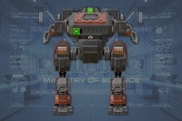
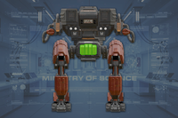
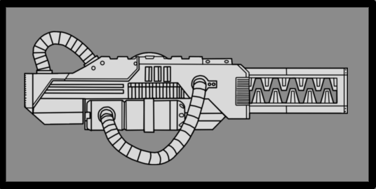
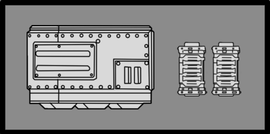
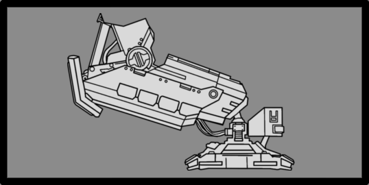

战争纵步者
War Strider
基本信息
描述
Heavily 有护甲 机器人 walker unit armed with 重型 Fusion Repeaters and 爆炸 手榴弹 launchers.
阵营
最低难度
体型级别
Large
属性
生命值
3,500
火焰伤害倍率
硬直阈值
技术信息
游戏版本
the 战争纵步者 是一种大型  机器人 bipedal walker with 重型护甲, high-powered Fusion Culverins, and 手榴弹 Projectors.
机器人 bipedal walker with 重型护甲, high-powered Fusion Culverins, and 手榴弹 Projectors.
生成[edit | edit 来源]
Appearing at  极难 and above, the War Strider can spawn in 机器人 哨站, from Bulk Fabricators, or within 机器人空投. They also spawn in patrols outside of the Metropolis 生物群系.
极难 and above, the War Strider can spawn in 机器人 哨站, from Bulk Fabricators, or within 机器人空投. They also spawn in patrols outside of the Metropolis 生物群系.
During a 任务, 机器人空投 only contain either War Striders or Tanks.[引用 needed]
Certain 任务 类型 are devoid of War Striders unless they take place in an urban 环境 such as a Metropolis. These missions include 紧急撤离, 回收 Valuable Data, 进行地质勘测，以及 传播民主.[1]
行为[edit | edit 来源]
Upon spotting 绝地潜兵, the War Strider will 火焰 齐射 of grenades and lasers if at 射程, or will stomp if a 绝地潜兵 gets too close. Their Culverins are fired in bursts of 8 before cooling down for about 4 秒.
War Striders are slow and will not often pursue 绝地潜兵, instead launching a salvo of 10 grenades at them with their 手榴弹 Projectors if at a sufficient 距离 and 通常 firing their Fusion Culverins. Such grenades are fired on a steep 弧度, allowing them to potentially ignore cover.
结构解析[edit | edit 来源]
| 部件名称 | 生命值1 | 护甲值2 | 耐久2 | 主血量占比3 | 溢出上限4 | 构造5 | 致命 | ExDR6 | |
|---|---|---|---|---|---|---|---|---|---|
| Main | 3,500 | 100% | - | - | None | Yes | 0% | ||
| Torso | 3,300 | 100% | 80% | Yes | None | Yes | 0% | ||
| Eyes (2) | 500 |  |
70% | 30% | Yes | None | Yes | 100% | |
| Fusion Cannons (2) |
500 | 80% | - | - | None | No | 40% | ||
| 手榴弹 Launchers (2) |
400 | 70% | 0% | Yes | None | No | 100% | ||
| Crotch | 1,800 | 100% | 100% | Yes | None | Yes | 100% | ||
| Heatsink | 700 |  |
70% | 70% | Yes | None | Yes | 100% | |
| 髋关节(2) | 750 | 80% | 50% | Yes | None | Yes | 100% | ||
| 腿部(2) | 1,500 | 80% | 80% | Yes | None | Yes | 40% | ||
| Greaves (2) | 150 | 0% | 50% | Yes | None | No | 100% |
Disclaimer: Each highlighted part with a count has its own 生命值. Parts without a count share 生命值 pools.
1) Parts with their HP listed as "Main" do not have their own individual 生命值. All 造成伤害 to these parts is transferred to the enemy's 主生命值 pool.
2) Refer to 护甲 values and enemy 耐久度 as defined in 伤害 for more information.
3) 造成伤害 to a part will also be transferred in part or in full to 主生命值. If set to 0%, no 伤害 is transferred.
4) If set to "Yes", 伤害 transferred 对主血量 is capped by the combined 生命值 and 构造 of the part.
5) 构造 acts as a secondary 生命池 that, once Main or limb 生命值 has been depleted, may decay. The first number is the total 构造 and the second is the 衰退速率. If set to 0/s there is no decay and the 构造 behaves as extra 生命值.
6) ExDR means 爆炸 伤害抗性, and can 射程 from 0 to 100%. If set to 100%, the limb cannot take 爆炸伤害; The 爆炸伤害 will instead 目标 Main. Refer to 伤害 for more information.
- Note: This 机械师, known as Affected By 爆炸 can only occur once per 爆炸, regardless of 100% ExDR parts hit, and the 爆炸's 护甲穿透 must match or exceed 主体护甲 to deal 伤害 对主血量. However, if the same 爆炸 has already damaged Main, this 机械师 will not trigger.
武器配置[edit | edit 来源]
Fusion Culverins

A powerful weapon mounted onto the 庞大 War Strider. Paired, these 武器 have enough output to break apart armoured 载具 and completely obliterate anything 更小.
| 属性 | Value | |
|---|---|---|
| 范围效果 | ||
| 1m | ||
| 3m | ||
| 5m | ||
| 3/2/3 | ||
| 5/4/3/0 | ||
| 120发/分钟（Per Gun） (8-Round Salvo) 4秒（Heat 冷却） | ||
| ↔[40.00] ↕[40.00] | ||
| 30 (Impact + Blast) | ||
| 40（撞击），15（爆炸） ( | ||
| 20（撞击），15（爆炸） | ||
Weapon Failure (Fusion Culverin)

The Fusion Culverin is as incredibly powerful as it is worryingly 脆弱. Where 伤害 to its frame can be enough to cause a misfire, violently bursting the barrel, releasing volatile 能量 and rendering the weapon completely unusable.
| 属性 | Value | |
|---|---|---|
| 0弹道伤害 0耐久伤害 | ||
| 范围效果 | ||
| 2m | ||
| 3m | ||
| 3m | ||
| 3/2/3 | ||
(Via 爆炸) | ||
| 4/4/4/4 ( | ||
| N/A | ||
| N/A | ||
| N/A | ||
手榴弹 Projector Pod

Loaded with HE Grenades similar to those thrown by Troopers, the Projector can unload said munitions at a 庞大 rate, 射程 and 数量. Firing in a parabolic 弧度, the Projector completely saturates an area with high 爆炸 法令.
| 属性 | Value | |
|---|---|---|
| N/A | ||
| 范围效果 | ||
| 1.2m | ||
| 6m | ||
| 8m | ||
| 5/4/5 | ||
| 0/0/0/0 | ||
| 350发/分钟（Per Pod） 10 Grenades Per Salvo 2.5秒（换弹 Cycle） | ||
| ↔[100.00] ↕[100.00] | ||
| 30 | ||
| 30 ( | ||
| 40 | ||
Superheavy Stomp

Much like the 更小 Hulks, the War Strider is capable of simply crushing whatever happens to be underneath it, albeit now with far more force, to the point where it can create shockwaves.
| 属性 | Value | |
|---|---|---|
| N/A | ||
| 范围效果 | ||
| 1m | ||
| 3m | ||
| 4m | ||
| 3/2/3 | ||
| 0/0/0/0 | ||
| 40 | ||
| 30 ( | ||
| 30 | ||
战术信息[edit | edit 来源]
- The War Strider is a 重型单位 with
 重型 护甲 and high-powered 武器. Any weapon with
重型 护甲 and high-powered 武器. Any weapon with  重型 护甲穿透 or higher can 伤害 any part of it except for the greaves on the back of its Legs.
重型 护甲穿透 or higher can 伤害 any part of it except for the greaves on the back of its Legs.
- The Eye and Rear Vent are the War Strider's main weak spots; though highly 耐久, they are the lowest 生命值 parts that are 致命.
- A 单发 from the RS-422 磁轨炮 in unsafe mode or three shots from the APW-1 反器材步枪 can 摧毁 either of its eyes.
- The crotch and legs are more suitable targets for dedicated 反坦克武器, as they have significantly more 生命值.
- A 单发 from the GP-20 Ultimatum or FAF-14 Spear 导弹 can kill the War Strider regardless of which body part it hits, making it the most 有效 weapon system against them.
- Two shots from the P-33 制导手枪 to the torso will kill a War Strider, which the automated aiming always targets
- A single hit from the EAT-17 消耗性反坦克武器, LAS-99 类星体加农炮，或 GR-8 无后坐力炮 to the crotch, hip joints, or legs will 摧毁 the Strider.
- the E/AT-12 反坦克炮台 和 MLS-4X 突击兵 can 消除 the Strider with two shots to the crotch or legs, or a 单发 to the hip joints.
- 单个 G-123 铝热弹 can kill the War Strider when thrown at its torso or crotch.
- the S-11 Speargun can 硬直 the War Strider, causing it to temporarily cease its 攻击. In a pinch, 2 shots to the eye or hip joint will 摧毁 the Strider.
- 鹰式打击 战略配备 such as the “飞鹰”机枪扫射, “飞鹰”空袭，以及 Eagle 500kg Bomb can take 优势 of the War Strider's low mobility to deal 重型 伤害. The Eagle 110mm 火箭巢 is also a very 有效 option, being capable of one shotting the War Strider if all 6 rockets land
- Simply strafing horizontally is an 有效 way to dodge 火焰 from the War Strider.
- The grenades fired from its Projectors will ignore the shield generated from FX-12 防护罩生成器 Relays 和 SH-32 防护罩生成器 Packs
- Consequently, engaging War Striders requires 玩家 to not only find cover but also 储备 a safe exit route in case the War Strider 攻击 with grenades.
- These grenades can be tossed away, akin to a 机械统帅's, but this is ill-advised due to the sheer volume of grenades.
- During a 任务, the 绝地潜兵 may hear the unique "howling" of nearby War Striders. This audio cue enables 绝地潜兵 to detect the presence of War Striders and reconsider their 战术 for further actions.
- If 绝地潜兵 are close enough to War Strider, they can hear their usual chatting instead of howling.
琐事[edit | edit 来源]
- The design of the War Strider is reminiscent of the "ED-209" bipedal robot from RoboCop (1987)
变更历史[edit | edit 来源]
补丁
描述
1.005.000
2025-12-02
Change
- 已减少 force 力量 on 手榴弹 爆炸 from 50 to 30
修复
- War Striders now 引爆 mines
1.004.100
2025-10-23
Changes
- Shoots 2 fewer grenades per salvo (from 12 to 10 Grenades)
- Shoots grenades less often
- 已移除 ragdolling from its projectiles explosions
- Added weak spots aim for the eyes and the vents on the back
1.003.200
2025-07-15
Addition
- Added to the game.
参考[edit | edit 来源]
装甲兵 • Brawler • 机械统帅 • Rocket Raider • 特攻 Raider • Marauder • MG Raider • 狂暴者 • 蹂躏者 • Rocket 蹂躏者 • 重型 蹂躏者 • 侦察纵步者 • Reinforced 侦察纵步者 • Hulk Obliterator • Hulk Scorcher • Hulk Bruiser • War Strider • Annihilator Tank • Shredder Tank • Barrager Tank • 炮舰 • 运输舰 • 移动工厂
防空 阵地 • 机器人制造厂 • 机器人 MG 阵地 • 机器人哨站 • Bulk 构筑者 • Cannon Turret • 摧毁 广播 网络 • 探测器 Tower • Enemy Bio-Processors • Erase 恐怖分子 Memorials • 炮舰 设施 • 迫击炮台 • 破坏 Air Base • 战略配备干扰器 • Bunker Turret